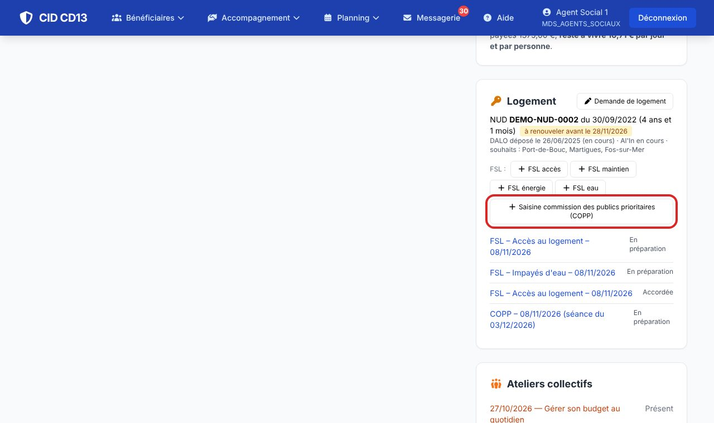
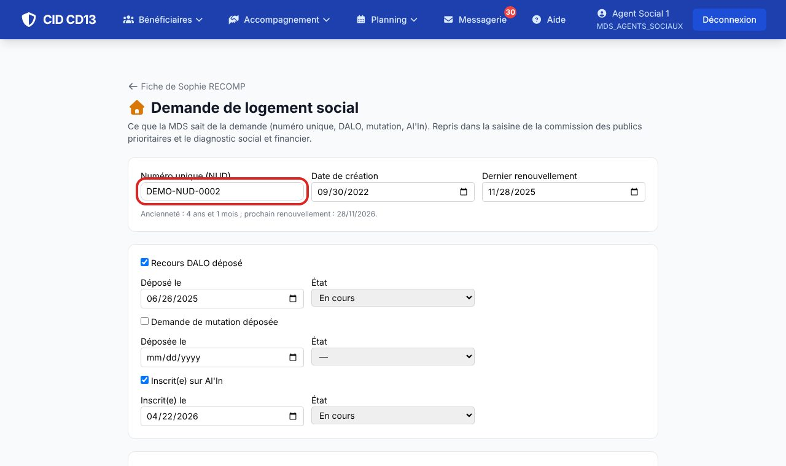
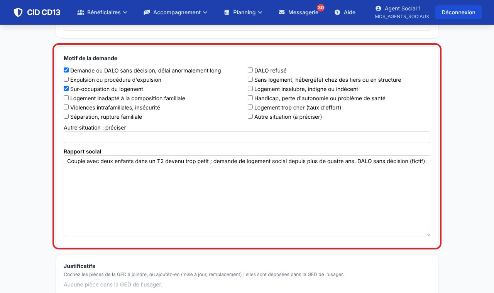
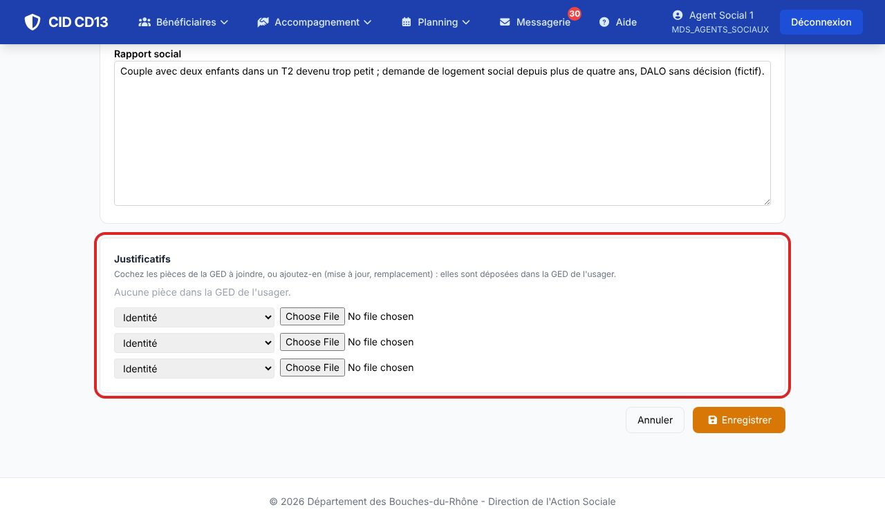
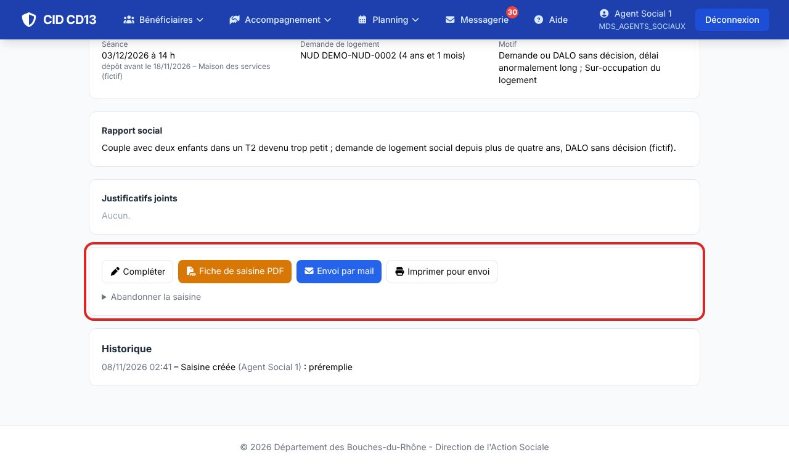
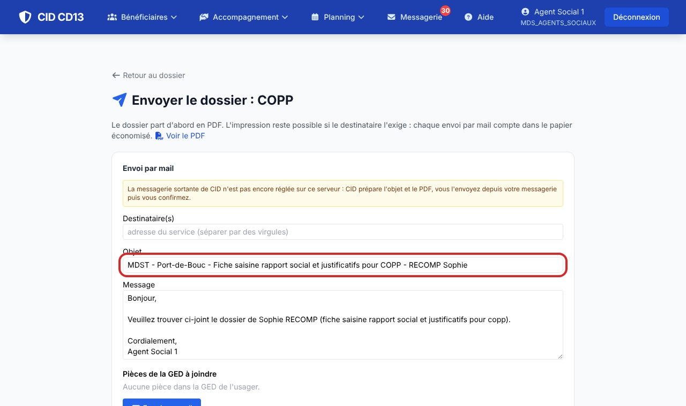
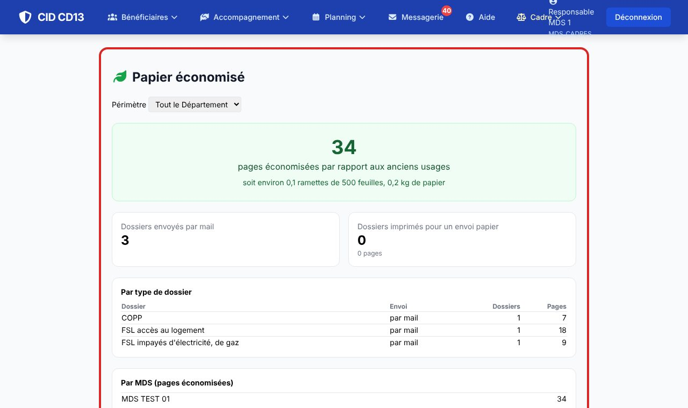

1La demande de logement social


- Encart Logement → Demande de logement : numéro unique et date de création (CID calcule l'ancienneté et prévient avant le renouvellement annuel), DALO, mutation, Al'In, communes et logement souhaités.
- Ces informations sont reprises dans la saisine de la commission et le diagnostic social et financier.
2Saisir la commission

- Saisine commission des publics prioritaires (COPP) : la fiche arrive préremplie (référent, ménage, n° de sécurité sociale, logement actuel, ressources, taux d'effort, reste à vivre, endettement, DALO, souhaits) et la prochaine séance est proposée.
- Complétez ce que CID ne connaît pas (revenu fiscal de référence, plafonds, typologie…), cochez un ou plusieurs motifs (DALO trop ancien ou refusé, expulsion, sur-occupation, logement indigne, handicap, violences intrafamiliales…) et rédigez le rapport social.
La mesure d'accompagnement en cours se choisit dans une liste (ASELL, AVDL, MASP…) ou s'écrit librement.
3Les justificatifs

- Cochez les pièces déjà dans la GED de l'usager.
- Pour une mise à jour ou un remplacement (identité, situation familiale ou professionnelle, ressources…), ajoutez le fichier : il est déposé dans la GED de l'usager et joint à la saisine.
4Envoyer par mail


- Envoi par mail : saisissez l'adresse de la commission de votre territoire ; l'objet est prérempli (« MDST – ville – Fiche saisine rapport social et justificatifs pour COPP – NOM Prénom ») ; la fiche PDF et les pièces cochées sont jointes.
- Imprimer pour envoi seulement si le destinataire l'exige.
- Après la séance, enregistrez la décision ou préconisation de la commission.
5Le papier économisé

- Menu Accompagnement → Papier économisé : les pages non imprimées grâce aux envois par mail (FSL, COPP), pour la MDS ou tout le Département.
- La statistique est collective : elle n'est jamais calculée par agent.
Bon à savoir
- Les séances de la commission (date, date limite de dépôt, lieu) se paramètrent en administration : Logement → Commissions des publics prioritaires. La fiche officielle se dépose vierge dans Logement → Formulaires officiels ; sinon CID imprime une trame avec les mêmes rubriques.
- Le dispositif est local : un autre territoire peut le nommer autrement ou ne pas l'utiliser.
Et ensuite ?
Cliquez sur une image pour l'agrandir. Le cadre rouge montre où cliquer ou quoi remplir. Toutes les données affichées sont fictives.